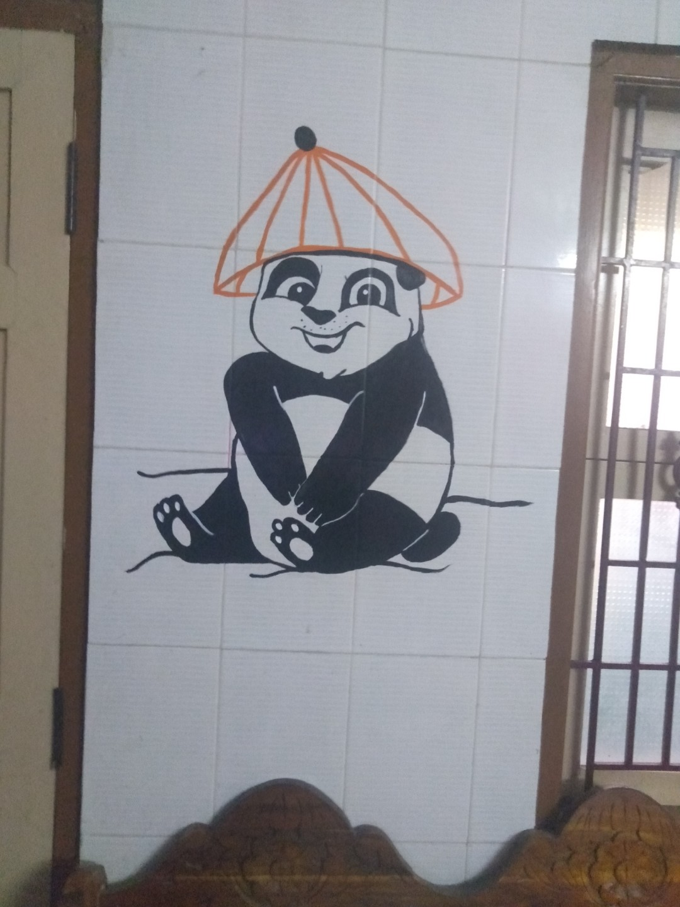

My Favorite Things
Dancing is my Favorite Things
Dance make me relax , feel good and give some positive vibe
when I hear song automatically I start dance i not a professional dancer but i love to dance
- Fried Chicken
- Noodles
- Fried Rice
- Cake
- Pudding
- Aathi
- 3
- Thudarum
- Dancing
- It make me feel Good
- Drawing
- In my free time i used to draw
- Editing
- I learn Editing at 2022

Best Drawing website